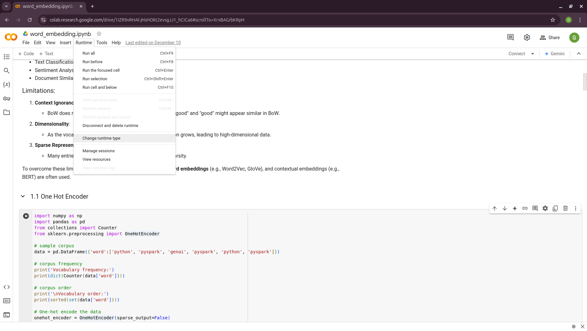

2. Preliminary
In this chapter, we will introduce some math and NLP preliminaries which is highly used in Generative AI.
2.1. Math Preliminary
2.1.1. Vector
A vector is a mathematical representation of data characterized by both magnitude and direction. In this context, each data point is represented as a feature vector, with each component corresponding to a specific feature or attribute of the data.
import numpy as np
import gensim.downloader as api
# Download pre-trained GloVe model
glove_vectors = api.load("glove-twitter-25")
# Get word vectors (embeddings)
word1 = "king"
word2 = "queen"
# embedding
king = glove_vectors[word1]
queen = glove_vectors[word2]
print('king:\n', king)
print('queen:\n', queen)
king:
[-0.74501 -0.11992 0.37329 0.36847 -0.4472 -0.2288 0.70118
0.82872 0.39486 -0.58347 0.41488 0.37074 -3.6906 -0.20101
0.11472 -0.34661 0.36208 0.095679 -0.01765 0.68498 -0.049013
0.54049 -0.21005 -0.65397 0.64556 ]
queen:
[-1.1266 -0.52064 0.45565 0.21079 -0.05081 -0.65158 1.1395
0.69897 -0.20612 -0.71803 -0.02811 0.10977 -3.3089 -0.49299
-0.51375 0.10363 -0.11764 -0.084972 0.02558 0.6859 -0.29196
0.4594 -0.39955 -0.40371 0.31828 ]
Vector
2.1.2. Norm
A norm is a function that maps a vector to a single positive value, representing its magnitude. Norms are essential for calculating distances between vectors, which play a crucial role in measuring prediction errors, performing feature selection, and applying regularization techniques in models.
Formula:
The \(\displaystyle \ell^p\) norm for \(\vec{v} = (v_1, v_2, \cdots, v_n)\) is
\[||\vec{v}||_p = \sqrt[p]{|v_1|^p + |v_2|^p + \cdots +|v_n|^p }\]\(\displaystyle \ell^1\) norm: Sum of absolute values of vector components, often used for feature selection due to its tendency to produce sparse solutions.
# l1 norm np.linalg.norm(king,ord=1) # max(sum(abs(x), axis=0)) ### 13.188952
\(\displaystyle \ell^2\) norm: Square root of the sum of squared vector components, the most common norm used in many machine learning algorithms.
# l2 norm np.linalg.norm(king,ord=2) ### 4.3206835
\(\displaystyle \ell^\infty\) norm (Maximum norm): The largest absolute value of a vector component.
2.1.3. Distances
Manhattan Distance (\(\displaystyle \ell^1\) Distance)
Also known as taxicab or city block distance, Manhattan distance measures the absolute differences between the components of two vectors. It represents the distance a point would travel along grid lines in a Cartesian plane, similar to navigating through city streets.
For two vector \(\vec{u} = (u_1, u_2, \cdots, u_n)\) and \(\vec{v} = (v_1, v_2, \cdots, v_n)\), the Manhattan Distance distance \(d(\vec{u},\vec{v})\) is
\[d(\vec{u},\vec{v}) = ||\vec{u}-\vec{v}||_1 = |u_1-v_1| + |u_2-v_2|+ \cdots +|u_n-v_n|\]Euclidean Distance (\(\displaystyle \ell^2\) Distance)
Euclidean distance is the most common way to measure the distance between two points (vectors) in space. It is essentially the straight-line distance between them, calculated using the Pythagorean theorem.
For two vector \(\vec{u} = (u_1, u_2, \cdots, u_n)\) and \(\vec{v} = (v_1, v_2, \cdots, v_n)\), the Euclidean Distance distance \(d(\vec{u},\vec{v})\) is
\[d(\vec{u},\vec{v}) = ||\vec{u}-\vec{v}||_2 = \sqrt{(u_1-v_1)^2 + (u_2-v_2)^2+ \cdots +(u_n-v_n)^2}\]Minkowski Distance (\(\displaystyle \ell^p\) Distance)
Minkowski distance is a generalization of both Euclidean and Manhattan distances. It incorporates a parameter, \(p\), which allows for adjusting the sensitivity of the distance metric.
Cos Similarity
Cosine similarity measures the angle between two vectors rather than their straight-line distance. It evaluates the similarity of two vectors by focusing on their orientation rather than their magnitude. This makes it particularly useful for high-dimensional data, such as text, where the direction of the vectors is often more significant than their magnitude.
The Cos similarity for two vector \(\vec{u} = (u_1, u_2, \cdots, u_n)\) and \(\vec{v} = (v_1, v_2, \cdots, v_n)\) is
\[cos(\theta) = \frac{\vec{u}\cdot\vec{v}}{||\vec{u}|| ||\vec{v}||}\]1 means the vectors point in exactly the same direction (perfect similarity).
0 means they are orthogonal (no similarity).
-1 means they point in opposite directions (complete dissimilarity).
# Compute cosine similarity between the two word vectors np.dot(king,queen)/(np.linalg.norm(king)*np.linalg.norm(queen)) ### 0.92024213
# Compute cosine similarity between the two word vectors similarity = glove_vectors.similarity(word1, word2) print(f"Word vectors for '{word1}': {king}") print(f"Word vectors for '{word2}': {queen}") print(f"Cosine similarity between '{word1}' and '{word2}': {similarity}")
Word vectors for 'king': [-0.74501 -0.11992 0.37329 0.36847 -0.4472 -0.2288 0.70118 0.82872 0.39486 -0.58347 0.41488 0.37074 -3.6906 -0.20101 0.11472 -0.34661 0.36208 0.095679 -0.01765 0.68498 -0.049013 0.54049 -0.21005 -0.65397 0.64556 ] Word vectors for 'queen': [-1.1266 -0.52064 0.45565 0.21079 -0.05081 -0.65158 1.1395 0.69897 -0.20612 -0.71803 -0.02811 0.10977 -3.3089 -0.49299 -0.51375 0.10363 -0.11764 -0.084972 0.02558 0.6859 -0.29196 0.4594 -0.39955 -0.40371 0.31828 ] Cosine similarity between 'king' and 'queen': 0.920242190361023
2.2. NLP Preliminary
2.2.1. Vocabulary
In Natural Language Processing (NLP), vocabulary refers to the complete set of unique words or tokens that a model recognizes or works with during training and inference. Vocabulary plays a critical role in text processing and understanding, as it defines the scope of linguistic units a model can handle.
Types of Vocabulary in NLP
1. Word-level Vocabulary: - Each word in the text is treated as a unique token. - For example, the sentence “I love NLP” would generate the vocabulary:
{I, love, NLP}.2. Subword-level Vocabulary: - Text is broken down into smaller units like prefixes, suffixes, or character sequences. - For example, the word “loving” might be split into
{lov, ing}using techniques like Byte Pair Encoding (BPE) or SentencePiece. - Subword vocabularies handle rare or unseen words more effectively.3. Character-level Vocabulary: - Each character is treated as a token. - For example, the word “love” would generate the vocabulary:
{l, o, v, e}.Importance of Vocabulary
1. Text Representation: - Vocabulary is the basis for converting text into numerical representations like one-hot vectors, embeddings, or input IDs for machine learning models.
2. Model Efficiency: - A larger vocabulary increases the model’s memory and computational requirements. - A smaller vocabulary may lack the capacity to represent all words effectively, leading to a loss of meaning.
3. Handling Out-of-Vocabulary (OOV) Words: - Words not present in the vocabulary are either replaced with a special token like
<UNK>or processed using subword/character-based techniques.Building a Vocabulary
Common practices include:
Tokenizing the text into words, subwords, or characters.
Counting the frequency of tokens.
Keeping only the most frequent tokens up to a predefined size (e.g., top 50,000 tokens).
Adding special tokens like
<PAD>,<UNK>,<BOS>(beginning of sentence), and<EOS>(end of sentence).
Challenges
Balancing Vocabulary Size: A larger vocabulary increases the richness of representation but requires more computational resources.
Domain-specific Vocabularies: In specialized fields like medicine or law, standard vocabularies may not be sufficient, requiring domain-specific tokenization strategies.
2.2.2. Tagging
Tagging in NLP refers to the process of assigning labels or annotations to words, phrases, or other linguistic units in a text. These labels provide additional information about the syntactic, semantic, or structural role of the elements in the text.
Types of Tagging
Part-of-Speech (POS) Tagging: - Assigns grammatical tags (e.g., noun, verb, adjective) to each word in a sentence. - Example: For the sentence “The dog barks,” the tags might be:
The/DET(Determiner)dog/NOUN(Noun)barks/VERB(Verb).
Named Entity Recognition (NER) Tagging: - Identifies and classifies named entities in a text, such as names of people, organizations, locations, dates, or monetary values. - Example: In the sentence “John works at Google in California,” the tags might be:
John/PERSONGoogle/ORGANIZATIONCalifornia/LOCATION.
Chunking (Syntactic Tagging): - Groups words into syntactic chunks like noun phrases (NP) or verb phrases (VP). - Example: For the sentence “The quick brown fox jumps,” a chunking result might be:
[NP The quick brown fox] [VP jumps].
Sentiment Tagging: - Assigns sentiment labels (e.g., positive, negative, neutral) to words, phrases, or entire documents. - Example: The word “happy” might be tagged as
positive, while “sad” might be tagged asnegative.Dependency Parsing Tags: - Identifies the grammatical relationships between words in a sentence, such as subject, object, or modifier. - Example: In “She enjoys cooking,” the tags might show:
She/nsubj(nominal subject)enjoys/ROOT(root of the sentence)cooking/dobj(direct object).
Importance of Tagging
Understanding Language Structure: Tags help NLP models understand the grammatical and syntactic structure of text.
Improving Downstream Tasks: Tagging is foundational for tasks like machine translation, sentiment analysis, question answering, and summarization.
Feature Engineering: Tags serve as features for training machine learning models in text classification or sequence labeling tasks.
Tagging Techniques
Rule-based Tagging: Relies on predefined linguistic rules to assign tags. Example: Using dictionaries or regular expressions to match specific patterns.
Statistical Tagging: Uses probabilistic models like Hidden Markov Models (HMMs) to predict tags based on word sequences.
Neural Network-based Tagging: Employs deep learning models like LSTMs, GRUs, or Transformers to tag text with high accuracy.
Challenges
Ambiguity:Words with multiple meanings can lead to incorrect tagging. Example: The word “bank” could mean a financial institution or a riverbank.
Domain-Specific Language: General tagging models may fail to perform well on specialized text like medical or legal documents.
Data Sparsity: Rare words or phrases may lack sufficient training data for accurate tagging.
2.2.3. Lemmatization
Lemmatization in NLP is the process of reducing a word to its base or dictionary form, known as the lemma. Unlike stemming, which simply removes word suffixes, lemmatization considers the context and grammatical role of the word to produce a linguistically accurate root form.
How Lemmatization Works
Contextual Analysis: - Lemmatization relies on a vocabulary (lexicon) and morphological analysis to identify a word’s base form. - For example:
running→runbetter→good
Part-of-Speech (POS) Tagging: - The process uses POS tags to determine the correct lemma for a word. - Example:
barking(verb) →barkbarking(adjective, as in “barking dog”) →barking.
Importance of Lemmatization
Improves Text Normalization: - Lemmatization helps normalize text by grouping different forms of a word into a single representation. - Example:
run,running, andran→run.
Enhances NLP Applications: - Lemmatized text improves the performance of tasks like information retrieval, text classification, and sentiment analysis.
Reduces Vocabulary Size: - By mapping inflected forms to their base form, lemmatization reduces redundancy in text, resulting in a smaller vocabulary.
Lemmatization vs. Stemming
Lemmatization: - Produces linguistically accurate root forms. - Considers the word’s context and POS. - Example:
studies→study.
Stemming: - Applies heuristic rules to strip word suffixes without considering context. - May produce non-dictionary forms. - Example:
studies→studi.
Techniques for Lemmatization
Rule-Based Lemmatization: - Relies on predefined linguistic rules and dictionaries. - Example: WordNet-based lemmatizers.
Statistical Lemmatization: - Uses probabilistic models to predict lemmas based on the context.
Deep Learning-Based Lemmatization: - Employs neural networks and sequence-to-sequence models for highly accurate lemmatization in complex contexts.
Challenges
Ambiguity: Words with multiple meanings may result in incorrect lemmatization without proper context. - Example:
left(verb) →leaveleft(noun/adjective) →left.
Language-Specific Complexity: Lemmatization rules vary widely across languages, requiring language-specific tools and resources.
Resource Dependency: Lemmatizers require extensive lexicons and morphological rules, which can be resource-intensive to develop.
2.2.4. Tokenization
Tokenization in NLP refers to the process of splitting a text into smaller units, called tokens, which can be words, subwords, sentences, or characters. These tokens serve as the basic building blocks for further analysis in NLP tasks.
Types of Tokenization
Word Tokenization:
Splits the text into individual words or terms.
- Example:
Sentence: “I love NLP.”
Tokens:
["I", "love", "NLP"].
Sentence Tokenization:
Divides a text into sentences.
- Example:
Text: “I love NLP. It’s amazing.”
Tokens:
["I love NLP.", "It’s amazing."].
Subword Tokenization:
Breaks words into smaller units, often using methods like Byte Pair Encoding (BPE) or SentencePiece.
- Example:
Word:
unhappiness.Tokens:
["un", "happiness"](or subword units like["un", "happi", "ness"]).
Character Tokenization:
Treats each character in a word as a separate token.
- Example:
Word:
hello.Tokens:
["h", "e", "l", "l", "o"].
Importance of Tokenization
Text Preprocessing:
Tokenization is the first step in many NLP tasks like text classification, translation, and summarization, as it converts text into manageable pieces.
Text Representation:
Tokens are converted into numerical representations (e.g., word embeddings) for model input in tasks like sentiment analysis, named entity recognition (NER), or language modeling.
Improving Accuracy:
Proper tokenization ensures that a model processes text at the correct granularity (e.g., words or subwords), improving accuracy for tasks like machine translation or text generation.
Challenges of Tokenization
Ambiguity:
Certain words or phrases can be tokenized differently based on context.
Example: “New York” can be treated as one token (location) or two separate tokens (
["New", "York"]).
Handling Punctuation:
Deciding how to treat punctuation marks can be challenging. For example, should commas, periods, or quotes be treated as separate tokens or grouped with adjacent words?
Multi-word Expressions (MWEs):
Some expressions consist of multiple words that should be treated as a single token, such as “New York” or “machine learning.”
Techniques for Tokenization
Rule-Based Tokenization: Uses predefined rules to split text based on spaces, punctuation, and other delimiters.
Statistical and Machine Learning-Based Tokenization: Uses trained models to predict token boundaries based on patterns learned from large corpora.
Deep Learning-Based Tokenization: Modern tokenization models, such as those used in transformers (e.g., BERT, GPT), may rely on subword tokenization and neural networks to handle complex tokenization tasks.
2.3. Platform and Packages
2.3.1. Google Colab
Google Colab (short for Colaboratory) is a free, cloud-based platform that provides users with the ability to write and execute Python code in an interactive notebook environment. It is based on Jupyter notebooks and is powered by Google Cloud services, allowing for seamless integration with Google Drive and other Google services. We will primarily use Google Colab with free T4 GPU runtime throughout this book.
Key Features
Free Access to GPUs and TPUs Colab offers free access to Graphics Processing Units (GPUs) and Tensor Processing Units (TPUs), making it an ideal environment for machine learning, deep learning, and other computationally intensive tasks.
Integration with Google Drive You can store and access notebooks directly from your Google Drive, making it easy to collaborate with others and keep your projects organized.
No Setup Required Since Colab is entirely cloud-based, you don’t need to worry about setting up an environment or managing dependencies. Everything is ready to go out of the box.
Support for Python Libraries Colab comes pre-installed with many popular Python libraries, including TensorFlow, PyTorch, Keras, and OpenCV, among others. You can also install any additional libraries using pip.
Collaborative Features Multiple users can work on the same notebook simultaneously, making it ideal for collaboration. Changes are synchronized in real-time.
Rich Media Support Colab supports the inclusion of rich media, such as images, videos, and LaTeX equations, directly within the notebook. This makes it a great tool for data analysis, visualization, and educational purposes.
Easy Sharing Notebooks can be easily shared with others via a shareable link, just like Google Docs. Permissions can be set for viewing or editing the document.
GPU Activation
Runtime --> change runtime type --> T4/A100 GPU
|  |
{kind=link}
{kind=link}